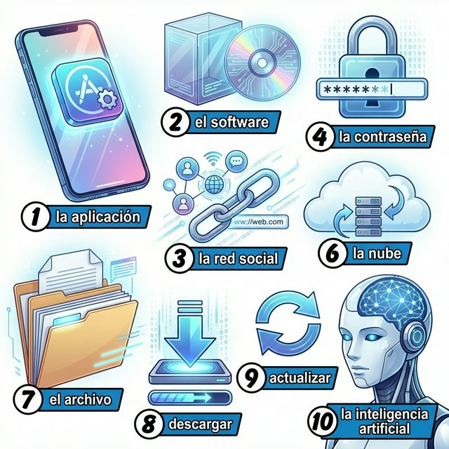

Cervantes: §9 미디어 심화: 소셜 미디어, 팟캐스트 및 §16 과학 및 기술: 실전 IT 어휘
La era digital (디지털 시대)
A2 단계에서는 기술을 단순히 사용하는 것을 넘어, 디지털 환경에서의 소통 방식과 그 기술이 우리 삶에 미치는 영향에 대해 이야기합니다. 소셜 미디어의 장단점을 논하거나, 스마트폰 앱을 이용해 문제를 해결하고, 최신 기술 트렌드에 대해 자신의 의견을 표현할 수 있을까요? 이번 장에서는 전화 통화 에티켓, 빈도 부사(frecuencia)를 활용한 디지털 습관 표현, 그리고 전차상거래와 보안 관련 고급 IT 어휘를 배웁니다. 스페인어로 여러분의 디지털 라이프를 더욱 스마트하게 표현해 봅시다.
학습 목표
우리의 삶을 바꾸고 있는 최신 기술과 디지털 환경입니다. 이미지 속의 스마트한 연구 공간과 함께 어휘를 익혀보세요.

| # | Spanish | English Bridge | Korean Tip |
|---|---|---|---|
| 1 | la aplicación / la app | Application / App ✅ | 앱 |
| 2 | el software | Software ✅ (Perfect Cognate) | 소프트웨어 |
| 3 | la red social | Social Network ✅ | 소셜 미디어 / SNS |
| 4 | la contraseña | — | 비밀번호 |
| 5 | el enlace | Link (to bind/lace) | 링크 / 연결 |
| 6 | la nube | — | 클라우드 (원래 의미: 구름) |
| 7 | el archivo | Archive ✅ | 파일 / 기록물 |
| 8 | descargar | Discharge / Download (near) | 다운로드하다 |
| 9 | actualizar | Actualize / Update (near) | 업데이트하다 |
| 10 | la inteligencia artificial | Artificial Intelligence ✅ | 인공지능 (AI) |
✅ 표시된 단어는 영어와 어원의 뿌리가 같은 'Cognates'입니다.
전화 통화와 디지털 기기 사용 시 꼭 필요한 실전 패턴입니다.
A. 전화 통화 표현 (Por Teléfono)
B. 빈도와 습관 (Frecuencia)
디지털 생활의 반복되는 패턴을 표현하는 법과 전화 통화의 특징을 알아봅시다.
동사의 위치에 따라 강조점이 달라질 수 있지만, 표준적인 위치는 다음과 같습니다.
전기 장치나 앱을 다룰 때 목적대명사는 필수적입니다.
스페인의 새로운 미디어 트렌드를 살펴봅시다.
España se ha convertido en uno de los mayores consumidores de podcasts en el mundo hispanohablante. Temas como la tecnología, la historia, el humor y el desarrollo personal son extremadamente populares. Plataformas como iVoox o Spotify permiten a los creadores españoles llegar a audiencias locales e internacionales.
Además, los YouTubers y Streamers españoles (como Ibai Llanos o AuronPlay) son figuras de gran influencia cultural, superando a menudo a la televisión tradicional en audiencia joven. Estos creadores han revolucionado la forma en que los españoles consumen entretenimiento e información. La cultura digital en España es dinámica, participativa y está en constante evolución, reflejando una sociedad que valora la creatividad y la conexión instantánea.
[한국어 번역]
스페인은 스페인어권 세계에서 가장 큰 팟캐스트 소비국 중 하나가 되었습니다. 기술, 역사, 유머, 자기계발 같은 주제들이 매우 인기가 높습니다. iVoox나 Spotify와 같은 플랫폼들은 스페인 크리에이터들이 국내외 청중들에게 다가갈 수 있게 해줍니다.
또한, 이바이 야노스(Ibai Llanos)나 아우론플레이(AuronPlay) 같은 스페인 유튜버와 스트리머들은 젊은 층 시청자 수에서 종종 전통적인 TV를 능가할 정도로 큰 문화적 영향력을 가진 인물들입니다. 이 크리에이터들은 스페인 사람들이 엔터테인먼트와 정보를 소비하는 방식을 혁신적으로 변화시켰습니다. 스페인의 디지털 문화는 역동적이고 참여적이며 끊임없이 진화하고 있으며, 창의성과 즉각적인 연결을 소중히 여기는 사회적 분위기를 반영합니다.
A. Choose the correct frequency adverb (알맞은 빈도 부사를 선택하세요)
| Situation | Frequency Adverb |
|---|---|
| 1. Every single day (매일 매 순간) | a. Muchas veces |
| 2. Not even once (한 번도 없음) | b. A veces |
| 3. Regularly (정기적으로, 자주) | c. Siempre |
| 4. Occasionally (가끔씩) | d. Nunca |
| 5. Many times (여러 번) | e. A menudo |
B. 전화 통화 표현 연습 (다음 상황에 맞는 표현을 연결하세요)
C. 번역 연습 (디지털 기술 및 빈도 표현을 활용하세요)
Mi vida en las redes (나의 소셜 미디어 생활)
Me llamo Marta y soy diseñadora gráfica. Mi trabajo está muy conectado con la tecnología. Siempre uso el ordenador y la nube para guardar mis archivos. A menudo comparto mis diseños en Instagram para recibir comentarios de otros artistas. Mi red social favorita es Twitter (X) porque allí me informo de las noticias de tecnología. A veces, escucho un podcast sobre inteligencia artificial mientras trabajo. "Si no te actualizas, te quedas atrás", es mi lema. Sin embargo, intento desconectar los fines de semana. Nunca reviso el móvil después de las diez de la noche porque quiero descansar bien. La tecnología es una herramienta increíble, pero lo más importante es cómo la usamos para conectar con las personas.
Questions:
[한국어 번역]
제 이름은 마르타이고 그래픽 디자이너입니다. 제 업무는 기술과 매우 밀접하게 연결되어 있습니다. 저는 파일들을 저장하기 위해 항상 컴퓨터와 클라우드를 사용합니다. 종종 다른 아티스트들의 피드백을 받기 위해 제 디자인들을 인스타그램에 공유합니다. 제가 가장 좋아하는 소셜 미디어는 트위터(X)인데, 그곳에서 기술 뉴스 정보를 얻기 때문입니다. 가끔은 일을 하면서 인공지능에 관한 팟캐스트를 들어요. "업데이트하지 않으면 뒤처진다"는 것이 제 좌우명입니다. 하지만 주말에는 연결을 끊으려 노력합니다. 밤 10시 이후에는 잘 쉬고 싶어서 절대 휴대폰을 확인하지 않아요. 기술은 놀라운 도구이지만, 가장 중요한 것은 우리가 그것을 사람들과 연결하는 데 어떻게 사용하느냐 하는 것입니다.
Un problema técnico (기술적인 문제)
Situación: Pedro llama al servicio técnico porque no puede entrar en su cuenta de internet.
상황: 파블로가 인터넷 계정에 접속할 수 없어 기술 서비스 센터에 전화합니다.
| Spanish | Korean |
|---|---|
| Operador: ¿Dígame? Soporte técnico, ¿en qué puedo ayudarle? | 상담원: 여보세요? 기술 지원팀입니다, 무엇을 도와드릴까요? |
| Pedro: Hola, llamo porque no puedo entrar en mi cuenta. | 페드로: 안녕하세요, 제 계정에 로그인할 수 없어서 전화드렸어요. |
| Operador: ¿Ha olvidado su contraseña? | 상담원: 비밀번호를 잊어버리셨나요? |
| Pedro: No, la sé perfectamente, pero el enlace no funciona. | 페드로: 아니요, 정확히 알고 있는데 링크가 작동하지 않아요. |
| Operador: Entiendo. Vamos a intentar actualizar la página. | 상담원: 이해했습니다. 페이지를 새로고침(업데이트)해봅시다. |
| Pedro: Ya lo he hecho, 하지만 sigue igual. | 페드로: 이미 해봤는데, 여전해요. |
| Operador: Un momento, por favor. Voy a revisar el servidor. | 상담원: 잠시만 기다려주세요. 서버를 확인해 보겠습니다. |
이번 장의 핵심 내용을 복습해 보세요.
¡Excelente trabajo! 이번 장을 통해 여러분은 현대 사회의 언어인 '기술'에 대해 스페인어로 소통하는 법을 배웠습니다. 디지털 기기 사용 습관부터 전화 에티켓까지, 여러분의 스페인어는 이제 더욱 현실적이고 스마트해졌습니다. 기술은 단순한 도구이지만, 그것을 스페인어로 다루는 여러분의 모습은 이미 글로벌 경쟁력을 갖춘 인재입니다. 다음 장에서는 우리의 세상을 더욱 넓혀줄 '여행, 대중교통 및 위치 찾기(A2)' 섹션으로 넘어가겠습니다. ¡Sigue innovando con el español!
6. Práctica - A. Choose the correct frequency adverb
1-c / 2-d / 3-e / 4-b / 5-a
6. Práctica - B. 전화 통화 표현 연습
1-b / 2-d / 3-a / 4-c / 5-e
6. Práctica - C. 번역 연습
** Lectura Questions**